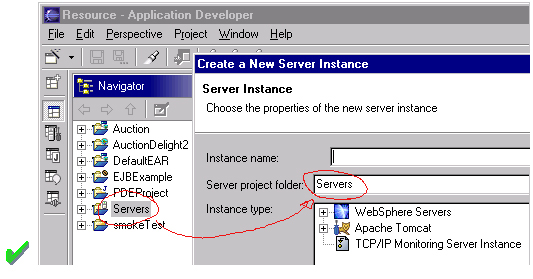

| Eclipse Corner Article |
By: Dave Springgay (OTI), Jin Li (IBM),
Julian Jones (IBM), and Greg Adams (OTI).
Last Updated: Feb. 27, 2002
Eclipse is a universal tool platform - an open, extensible IDE for anything, but nothing in particular. The real value comes from tool plug-ins that "teach" Eclipse how to work with things - Java™ files, Web content, graphics, video - almost anything you can imagine. Eclipse allows you to independently develop tools that integrate with other people's tools so seamlessly, you won't know where one tool ends and another starts. The very notion of a tool, as we know it, disappears completely.
The platform is very flexible and extensible, but this flexibility has a serious drawback. In particular, there is no way within the program to ensure User Interface consistency between the registered components within the platform. This document attempts to reconcile this problem, by defining standard User Interface guidelines for the creation of new components. If these guidelines are adopted within your own tools, it will lead to greater consistency with the platform and other tools, and an easier learning curve for your customers.
These guidelines are intended for use by designers and implementors
of an Eclipse user interface extension.
The workbench is a collection of windows. Each window contains a menu, a toolbar, and one or more perspectives (see below). A perspective is a visual container for a set of views and editors (parts). These parts exist wholly within the perspective and are not shared. A perspective is like a page within a book. It exists within a window along with any number of other perspectives and, like a page within a book, only one perspective is visible at any time.
In the File menu you will find a New submenu, which contains menu items for Project, Folder, and File creation. The File menu also contains menu items for Import and Export, which are used to import files into the Workbench, and export them out again. In the Edit menu, you will find familiar actions like Cut, Copy, Paste, and Delete. These actions are known as global actions, and target the active part (as indicated by a shaded title bar). In other words, if the Delete action is invoked with the Navigator active, the actual implementation is performed by the Navigator. In the Perspective menu, you will find menu items to add views to the window, or change the layout of the window completely. In the Window menu you'll find the Preferences menu item, which is used to modify the functional preferences of Eclipse.
As a plug-in developer, you can contribute new views, editors, wizards, menu, and tool items to the platform. These contributions are defined using XML, and once registered, integrate seamlessly with the components which already exist in the platform.
This document is intended for UI developers. With this audience in mind, we can talk about the two main layers of any application: the model layer and the user interface layer. In Eclipse the model layer, known as the Workspace, is a collection of resources (projects, folders and files). The user interface, or Workbench, defines the presentation for those resources.
As a UI developer, you will also have a model and a presentation. If we assume that your goal is to make the model visible, through some presentation, most developers will start out by adding a new view or editor to the workbench.
In Eclipse, an editor is used to interact with the primary focus of attention, which may be a document, data object, or person. In every case, the primary focus of attention is a reflection of the primary task. To illustrate this concept, let's look at some common examples.
To do Java programming, the primary task is to create, edit, and debug Java code. The primary focus is the Java code, so an editor is used to interact with that code. The navigator, outline, and properties view exist to support the primary task, but rarely hold your attention for an extended period of time while you are writing Java code.
To read email, the primary task is to create, send, read, and reply to email. The primary focus is a particular email message, so an editor is used to view or reply to an email message. A view may be used to select an email message to read, and open an editor.
To communicate using instant messenging, the primary task is the conversation. The primary focus is a particular conversation, so an editor is used to carry on that conversation. A view may be used to list people with whom you can initiate a conversation.
To browse the Web, the primary task is reading.
The primary focus is a particular web page, so an editor is used to browse
the web page. A
view may be used to save your favorite links, and reopen
them. At any time, you may decide to edit the page you are looking at.
This causes a new editor to open.
In each case, the primary task determines the primary focus of attention. As the primary focus of attention, it deserves a primary position in the UI (as an editor), and can contribute actions to the window menu bar and toolbar.
Views are used to support the primary task. You use them to navigate a hierarchy of information, open an editor, or view properties for the active editor. In reflection of their support role, they can not contribute actions to the window menu bar and toolbar.
Once you have added a view or editor, an interesting question arises. Where did this model come from? In Eclipse, most data is created using a Creation Wizard. You may want to add a Creation wizard too. And once an object exists, you may need a way to edit the properties for that object using a Properties page, or the Properties dialog.
All of these ideas will be discussed, in detail, in the following sections.
It is expected that you already have a basic understanding of the Eclipse UI architecture and APIs, and the basic UI design principles: user in control, directness, consistency, forgiveness, feedback, aesthetics, and simplicity. If you do not currently have the prerequisite knowledge, please read the relevant documentation first.
 Guideline 1.1
Guideline 1.1
Follow and apply good user interface design principles: user in control, directness, consistency, forgiveness, feedback, aesthetics, and simplicity.
If you're in doubt about the appropriate look and feel for a tool, look to the platform first, then the Java development tooling in Eclipse for guidance. In many cases, the workflow you imagine may already exist in Eclipse. If so, adopt the platform's workflow and user interface conventions. This will lead to greater consistency with the platform and other plugins, and an easier learning curve for your customers.
In some scenarios, it may be tempting to ignore the workflow of Eclipse and implement a "custom" user interface. This interface will almost certainly stand out like a sore thumb in an integrated environment, where other tools adopt the platform conventions. You lose the benefit of past experience, and force your customers to learn new ideas.
 Guideline 1.2
Guideline 1.2
Follow the platform lead for user interface conventions.If you decide to reuse the conventions of Eclipse, be careful not to misappropriate Eclipse specific UI conventions. For instance, the active part in a workbench window is indicated by a shaded title. The use of shaded titles within an editor (see below) may be one way to indicate where the focus is, within that part, but it will also blur the concept of part activation in the window.
 Guideline 1.3
Guideline 1.3
Be careful not to mix UI metaphors. It may blur the original concept, and your own application.Eclipse is an open source project. If you feel your ideas are generally useful, join the Eclipse community, write a proposal, and work with the Eclipse community to make Eclipse a better platform for product development and customer satisfaction.
Visit www.eclipse.org and join the Eclipse UI mailing list platform-ui-dev.
 Guideline 1.4
Guideline 1.4
If you have an interesting idea, work with the Eclipse community to make Eclipse a better platform for all.
 Guideline
1.5
Guideline
1.5
Use Headline style capitalization for all titles, including those used for windows, dialogs, tabs, column headings and push buttons. Capitalize the first and last words, and all nouns, pronouns, adjectives, verbs and adverbs. Do not include ending punctuation.
Use Sentence style capitalization for all control labels in a dialog or window, including those for check boxes, radio buttons, group labels, and simple text fields. Capitalize the first letter of the first word, and any proper names.
 Guideline 1.7
Guideline 1.7
Localize the resources within your plug-in.
When a user input error occurs in a wizard, please refer to Wizards section on how to handle the error.
When an error occurs in an editor, please refer to Editors section on how to handle the error.
When an error occurs which requires either an explicit user input or immediate attention from users, a modal dialog should be used to communicate the error to the user. This forces the user to notice, and deal with the problem. It is not appropriate to activate a part and display the error in the part. If this approach is taken, the user may fail to notice the activation and the error.
 Guideline
1.8
Guideline
1.8
When an error occurs which requires either an explicit user input or immediate attention from users, communicate the occurrence with a modal dialog.If a programming error occurs in the product, an error dialog should be used to communicate the occurrence to the user. The error should also be logged using the workbench error logging facility. This gives the user an opportunity to restart the platform, remove the offending plugin, and contact their system administrator.
The plug-in should provide the following information in the detail area of the error dialog:
If a programming error occurs in the product, communicate the occurrence with a dialog, and log it.
As a plug-in developer, you can contribute actions to the window menu bar and toolbar, or to individual views and editors. Contribution to the window is performed using an action set, a set of task oriented actions which the user can show or hide. Contribution to a view or editor is performed using individual actions.
Here is an illustration of the main areas of contribution.

In this section we'll look at general action guidelines. For information on window, view, or editor specific guidelines, see Windows, Views, and Editors.
Each action must provide one full color image. This image will be displayed if the mouse is placed over the action. It will also be used to generate the enabled, disabled, and pressed images which appear in normal action use. Actions which are contributed in code also have the option to define explicit images for enabled, disabled, and roll over. This option can be used for greater control over image appearance.
The following snapshot shows the valid use of Headline capitalization in a toolbar.
 Guideline
2.1
Guideline
2.1
Each action must have a label, tool tip, and full color image. The label and tool tip must use Headline style capitalization.The tool tips for an action should describe the behavior which occurs if the action is invoked. For instance, in the following snapshot the behavior of the Field button is shown. If the action is unpressed, pressing the action will hide the fields. If the action is pressed, unpressing the action will show the fields. This behavior is shown using two tool tips.
A single tool tip should not be used to convey the behavior of both cases. It is too ambiguous.
Nor should it label the state the toolbar button is currently in.
 Guideline
2.2
Guideline
2.2
The action tooltip should describe the result of the action, not the current state of the action.For consistency, any action which has a similar behavior to existing actions in the workbench, should adopt the same terminology.
When creating a resource, the term "New" should be used in an action or wizard. For instance, "New File", "New Project" and "New Java Class". The term "Delete" should be used when deleting an existing resource.
When creating an object inside a resource (e.g., a tag in an XML file; a method or field in a Java class), the term "Add" should be used; the user is adding something to an existing resource. The term "Remove" should be used to remove an object from a resource.
 Guideline
2.3
Guideline
2.3
Adopt the labeling terminology of the workbench for New, Delete, Add, and Remove actions.
 Guideline
2.4
Guideline
2.4
An action should only be enabled if it can be completed successfully.Action enablement should be quick to calculate. If it is too expensive to calculate the enablement of an action, the action should be optimistically enabled. If the action is invoked, it should calculate the real enablement, and show a dialog to the user if it is not available.
 Guideline
2.5
Guideline
2.5
Action enablement should be quick. If action enablement cannot be quick, enable the action optimistically and display an appropriate message if the action is invoked, but cannot be completed.
 Guideline 3.1
Guideline 3.1
When a dialog opens, set the initial focus to one of the controls in the container.
Slush Buckets should also have the following control buttons, in this
order, for moving objects from the source the selected buckets.
| Button | Function |
| > | Add whatever is selected on the left to the right |
| < | Remove selected items from the right |
| >> | Add all (whether they are selected or not) |
| << | Remove all |
 Guideline 3.2
Guideline 3.2
Slush Bucket widget (or Twin Box) should flow from left to right with the source objects on the left hand side. It should have the >, <, >>, << control buttons in this order.
 Guideline
4.1
Guideline
4.1
Use a wizard for any task consisting of many steps, which must be completed in a specific order.
At the bottom of each wizard, a Back, Next, Finish, and Cancel button should appear.
 Guideline
4.2
Guideline
4.2
Each wizard must contain a header with a banner graphic and a text area for user feedback. It must also contain Back, Next, Finish, and Cancel buttons in the footer.
It is not appropriate to display an error message. At this point, the user hasn't done anything yet.
 Guideline
4.3
Guideline
4.3
Start the wizard with a prompt, not an error message.The initial state of the wizard should be derived from the context where it is opened. For instance, in the New File wizard, the current workbench selection is examined. If it points to a valid project or folder, the wizard will pre-populate the parent field with the parent project or folder name, and put cursor focus in the next field requiring user input. If the user's selection does not point to a valid parent project or folder, the wizard will not pre-populate the folder name. Instead, it will leave the field blank and put the cursor focus in the field. When the user's selection is on a file, a wizard may also go through these calculations using the parent folder or project of the file.

 Guideline
4.4
Guideline
4.4
Seed the fields within the wizard using the current workbench state.
If dialog information is absent or invalid, the Next or Finish buttons should be disabled until the situation is resolved. When resolution occurs, and all of the information has been provided, the Next or Finish buttons may be enabled.
Error messages should only be displayed when user input is invalid.
 Guideline
4.5
Guideline
4.5
Validate the wizard data in tab order. Display a prompt when information is absent, and an error when information is invalid.
Only enable the Next / Finish buttons if all required information in the dialog is present and valid.The error messages in a wizard should be intended for the end user, not the developer. With this in mind, message IDs should never be presented as part of the error text in the wizard's header area.
 Guideline
4.7
Guideline
4.7
Remove all programming message ID's from wizard text.
For instance, in the New Java Class wizard, a "Browse..." button is
placed beside the "Super Class" edit field. If the browse button
is pressed, a Browse Dialog will appear, and the user can select a super
class. This pattern should be used whenever a link will be established
between a new object and an old one. The "Browse..." button should
be located to the right of the edit field.
 Guideline
4.8
Guideline
4.8
Use a Browse Button whenever an existing object is referenced in a wizard.In the Browse Dialog, invalid choices should not appear. When the dialog is closed, and focus returns to the parent control, refresh the enablement state of controls within the dialog. In particular, refresh the enablement of Next, Finish, and OK buttons.
An example of valid and invalid filtering is shown in the following snapshot.
Have a readme.html file for every example project, and opening that readme.html automatically upon project creation. This will give users an immediate overview of the example: what it does, prerequisites, limitations, steps to take, and so on.
 Guideline
4.9
Guideline
4.9
If a new file is created, open the file in an editor. If a group of files are created, open the most important, or central file in an editor. Open the readme.html file upon creation of an example project.If a new project is created, the wizard should change the active perspective within the workbench to one which is appropriate for the new project type.
 Guideline
4.10
Guideline
4.10
If a new project is created, change the active perspective to suit the project type.In either case, where a file, folder, or project is created, the wizard should select and reveal the new object in the appropriate view. This provides concrete evidence to the user that, yes, the new object was created and now exists.
 Guideline
4.11
Guideline
4.11
If a new object is created, select and reveal the new object in the appropriate view.In many situations, the creation of a resource may involve the creation of a project or folder to contain the resource. If the containing project or folder can be created from within the wizard (with a very reasonable set of defaults), the wizard should allow it. If the creation of such resources requires detailed user interaction in order for parent project or folder to be set up correctly, the wizard should not attempt to do this. Instead, the wizard error text should instruct the user that "The specified project does not exist".
The EAR Import wizard is an example where allowing the user to specify the name of the parent project in place makes for a much more usable interaction. In this case, based on the user provided name, the wizard goes off and creates not only the EAR project itself, but also any web projects, etc., that may be needed as well.
 Guideline
4.12
Guideline
4.12
Create folder objects in a wizard if reasonable defaults can be defined.
 Guideline
4.13
Guideline
4.13
Use the label "Project Name" when the item must be a Project; otherwise, use the label "Folder". Do not qualify the term.
 Guideline
5.1
Guideline
5.1
Use a editor to edit or browse a file, document, or other input object.Modifications made in an editor follow an open-save-close lifecycle model. When an editor first opens, the editor contents should be unmodified (clean). If the contents are modified, the editor should communicate this change to the platform. In response, an asterisk will appear in the editor tab. The modifications should be buffered within the edit model, until such a time as the user explicitly saves them. At that point, the modifications should be committed to the model storage.
 Guideline
5.2
Guideline
5.2
Modifications made in an editor must follow an open-save-close lifecycle model.An editor is document or input-centric. Each editor has an input, and only one editor can exist for each editor input within a page. This policy has been designed to simplify part management.
 Guideline
5.3
Guideline
5.3
Only one instance of an editor may exist, for each editor input, within a perspective.In addition, it should be possible to open a separate instance of an editor for each input.
 Guideline
5.4
Guideline
5.4
It must be possible to open a separate instance of an editor for each input.
 Guideline
5.5
Guideline
5.5
The editor should be labeled with the name of the file, document, or input being edited.If the editor contains more than one page, a tab control should be used for page activation. The use of this control is demonstrated by the plugin file and html editors.
Tab labels should be kept to one word, and two words at most.
 Guideline
5.6
Guideline
5.6
In multipage editors, use a tab control for page activation.Tab labels should be kept to one word, and two words at most.
 Guideline
5.7
Guideline
5.7
All of the actions available in the editor should be added to the window menu bar.The following format is recommended, to ensure consistency across Eclipse and better ease of use.
| Edit | Insert | Format | Perspective |
| Add any object centric actions here | Add any "insert" actions here | Format actions for the current selection. | Actions to control what you see in the editor. |
 Guideline
5.8
Guideline
5.8
Use the standard format for editor contributions in the window menu bar.The window menu bar contains a number of global actions, such as Cut, Copy, and Paste in the Edit menu. These actions target the active part, as indicated by a shaded title area. If these actions are supported within an editor, the editor should hook these window actions, so that selection in the window menu bar or toolbar produces the same result as selection of the same action in the editor. The editor should not ignore these actions, and contribute duplicate actions to the window menu bar or toolbar.
A complete list of the global actions is declared in the IWorkbenchActionConstants.java (see below).
/**
* From IWorkbenchActionConstants.
* Standard global
actions in a workbench window.
*/
public static final
String [] GLOBAL_ACTIONS = {
UNDO,
REDO,
CUT,
COPY,
PASTE,
PRINT,
DELETE,
FIND,
SELECT_ALL,
BOOKMARK
};
 Guideline
5.9
Guideline
5.9
If an editor has support for Cut, Copy, Paste, or any of the global actions, these actions must be executable from the same actions in the window menu bar and toolbar.
 Guideline
5.10
Guideline
5.10
Fill the editor toolbar with the most commonly used items in the view menu.The use of a local toolbar within an editor is contrary to the design of the workbench. Within the workbench, the toolbar for an editor is shared with editors of the same type. This reduces the flash which occurs when you switch between editors, reduces the number of images and actions in the product, and creates a better feel of integration.
In a text editor, you may assume that there is only one type of selection: text. In this case, the contents of the context menu will remain consistent for any selection in the editor.
 Guideline
5.11
Guideline
5.11
Fill the context menu with selection oriented actions, do not presentation or global actions.For consistency with other editors in Eclipse, each editor should adopt a common order for actions within the context menu. This format is shown in the following table. Within this table, each item represents a category of actions. The categories within the context menu should be kept distinct from one another through the use of separators.
| Undo / Redo |
| Add |
| Show In |
| Cut Copy Paste |
| Delete |
| Other Plugin Additions |
| Save |
 Guideline
5.12
Guideline
5.12
Use the standard format for editor context menus.For good spatial navigation, fill the context menu with a fixed set of actions for each selection type. Once the contents have been defined, the enablement state of each action should determined using the selected object state. In doing so, you establish a consistency which makes the menu more predictable, and easier to navigate.
 Guideline
5.13
Guideline
5.13
Fill the context menu with a fixed set of actions for each selection type, and then enable or disable each to reflect the selection state.One of the primary goals for the platform UI is extensibility. In fact, it is this extensibility which gives you the freedom to add new views, editors, perspectives, and actions to the platform. Of course, extensibility is a two way street. While you may wish to extend the platform, others may wish to extend your view or editor. It is common for one plug-in to add actions to the menu, toolbar, or context menu of an editor from another plugin.
In the platform, the menu and toolbar for an editor are automatically extended by the platform. In contrast, context menu extension is supported in collaboration between the editor and the platform. To achieve this collaboration, an editor must register each context menu it contains with the platform. It should also define an action filter for each object type in the editor. An action filter makes it easier for one plug-in to add an action to objects in an editor defined by another plug-in. The target is described using object type and attributes. For more information on the implementation of this concept, refer to Creating an Eclipse View.
 Guideline
5.14
Guideline
5.14
Register all context menus in the editor with the platform.
Implement an Action Filter for each object type in the editor.
If the editor does not contain any changes since the resource was last saved then the editor should be immediately closed.
 Guideline
5.16
Guideline
5.16
If the input to an editor is deleted, and the editor contains no changes, the editor should be closed.If the editor contains changes to the resource since the resource was last saved (i.e., it is "dirty"), the editor should give the user a chance to save their changes to another location, and then close. Here is a sample of the dialog which should be displayed:
 Guideline
5.17
Guideline
5.17
If the input to an editor is deleted, and the editor contains changes, the editor should give the user a chance to save their changes to another location, and then close.
 Guideline
5.18
Guideline
5.18
If the resource is dirty, prefix the resource name presented in the editor tab with an asterisk.
A view is typically used to navigate a hierarchy of information, open an editor, or display properties for the active editor. An editor is typically used to edit or browse a file, document or other input object.This statement is appropriate whether a file is read-only or not. In either case, the user should be able to select the file, open it, and browse the contents within an editor. If the file is read-only, the File > Save action should be disabled and the File > Save As should be enabled.
 Guideline
5.19
Guideline
5.19
Treat read-only editor input as you would any other input. Enable the Save As if possible.
For instance, if you open a .java file in an editor, the structure of the class is displayed in the Outline view. If you select a method or field in the outline, the text declaration of that item will be selected and revealed in the editor. If you select a method or field, and open the context menu, you can interact with the item as a conceptual unit, rather than just a bunch of text.
In general, an editor should provide an outline model to the Outline view if the data within the editor is too extensive to see on a single screen, and will yield a structured outline. This structured outline makes it very easy to navigate through objects like a java file or html file.
 Guideline
5.20
Guideline
5.20
If the data within an editor is too extensive to see on a single screen, and will yield a structured outline, the editor should provide an outline model to the Outline view.
When an Editor has an interaction with the Outline view, notification
about location should be two-way. That is, the user should be able to select
something in the outline and have the editor position updated, and the
user should be able to select something in the Editor pane and have the
outline view updated.
Context menu should be available, as appropriate, in the outline view which should support creation operations as appropriate.
 Guideline
5.21
Guideline
5.21
Notification about location between an Editor and the Outline view should be two-way. Context menu should be available in the Outline view as appropriate.
If the edit model contains errors or warnings, they should be indicated
in the Outline view. An error or warning image should be added to
the item with the error or warning respectively. If the item is part
of a tree, the error or warning image should also be propagated to each
ancestor of the item. If the ancestor of the item doesn't contain errors
or warnings, a different error or warning image -- for example, a grayed
X icon for error -- should be used for the ancestor. For instance, in the
following line, the addFastView method has an error, so an error image
is added to the item and its parent.
For this to work, care must be taken to design icons with overlay in mind, so that glyphs can be applied to the ancestor's icon.
 Guideline
5.22
Guideline
5.22
An error or warning image should be added to items with the error or warning respectively. If the item is part of a tree, the error or warning image should also be propagated to each ancestor of the item. If the ancestor of the item doesn't contain errors or warnings, a different error or warning image should be used for the ancestor..In an editor, task objects are commonly used to mark a location within a document. Once a task has been created, it appears in the Task view. If the task is selected, you may reopen the editor at the location defined in the Task.
 Guideline
5.23
Guideline
5.23
If appropriate, implement the "Add Task" feature in your editor.A bookmark object can also be used mark a location within a document. Once a bookmark has been created, it appears in the Bookmarks view. If the bookmark is selected, you may reopen the editor at the location defined in the Task.
 Guideline
5.24
Guideline
5.24
If appropriate, implement the "Add Bookmark" feature in your editor.
 Guideline
5.25
Guideline
5.25
Editors with source lines of text should have line numbers, and optionally column numbers..
 Guideline
5.26
Guideline
5.26
Table cell editors should support the single-click activation model, and in edit mode, they should render complex controls upon single-click.
In addition, changes should be committed once a user clicks off
the cell or hits ENTER.
The following are examples of good behaviour for a table cell Editor:
- when put in edit mode, drop-down appears with current selection active
& highlighted

- when cursoring through drop-down using arrow keys, it is possible
to move up and down any number of choices and the drop-down stays visible
until user makes an explicit selection
- first letter navigation is supported as a cursoring technique when
the drop-down is visible
- supports the "Enter" key as a way of making an explicit selection
via the keyboard when the drop-down is visible
- supports the "Esc" key as a way of canceling a selection via the
keyboard when the drop-down is visible
- when put in edit mode, drop-down appears with current selection active
& highlighted
- when put in edit mode, it is possible to arrow key through the choices
to make a selection without needing to invoke the drop-down
 Guideline
5.27
Guideline
5.27
Changes made in a table cell editor should be committed when a user clicks off the cell or hits the "Enter" key. Selection should be cancelled when user hits the "Esc" key.First letter navigation should be supported as a cursoring mechanism within a cell.
 Guideline
5.28
Guideline
5.28
When performing fine-grain error validation in an Editor, use the workbench status area for message output.When the Save action is invoked in an editor, use the Task view for showing errors which are persisted.
 Guideline
5.29
Guideline
5.29
Use the Task view to show errors found when the Save action is invoked.
 Guideline
5.30
Guideline
5.30
If modifications to a resource are made outside of the workbench, users should be prompted to either override the changes made outside of the workbench, or back out of the Save operation when the Save action is invoked in the editor.
 Guideline
6.1
Guideline
6.1
Use a view to navigate a hierarchy of information, open an editor, or display the properties of an object.Modifications made in a view should be saved immediately. For instance, if a file is modified in the Navigator, the changes are committed to the workspace immediately. A change made in the Outline view is committed to the edit model of the active editor immediately. For changes made in the Properties view, if the property is a property of an open edit model, it should be persisted to the edit model. If it is a property of a file, persist to file.
In the past, some views have tried to implement an editor style lifecycle, with a Save action. This can cause confusion. The File menu within a workbench window contains a Save action, but it only applies to the active editor. It will not target the active view. This leads to a situation where the File > Save action is in contradiction to the Save action within the view.
 Guideline
6.2
Guideline
6.2
Modifications made within a view must be saved immediately.Within a perspective, only one instance of a particular view can be opened. This policy is designed to simplify part management for a user. The user opens a view by invoking Perspective > Show View. If, for any reason, they lose a view, or forget about its existence, they can simply invoke Perspective > Show view again to make the view visible.
 Guideline
6.3
Guideline
6.3
Only one instance of a view may exist in a perspective.In a multi-tasking world, humans often perform more than one task at a time. In Eclipse, task separation can be achieved by creating a separate perspective for each task. In reflection of this, it should be possible to open a particular view in more than one perspective. If only one instance of a view may exist, the ability to multi-task is taken away.
 Guideline
6.4
Guideline
6.4
A view must be opened in one or more perspectives.A view can be opened in two ways: by invoking Perspective > Show View > X menu, where X is the name of the view, or by invoking another action within the workbench. For instance, if you select a class in the Packages view, and invoke Open Type Hierarchy, a Hierarchy view opens with the class hierarchy for the selection.
It should be possible to open any view from the Perspective > Show View menu, either as an explicit item within the menu, or as an item within the Perspective > Show View > Other dialog.
 Guideline
6.5
Guideline
6.5
A view can be opened from the Perspective > Show View menu.
The view label in the title bar must be prefixed with label of the view in Perspective > Show View menu. Given that it is impossible to change the entry in the Show View menu, this means you cannot change the name of a view. However, you can add additional text to the view label, to clarify the state of the view.
 Guideline
6.6
Guideline
6.6
The view label in the title bar must be prefixed with the label of the view in the Perspective > Show View menu.In most cases, a view will contain a single control or viewer. However, it is possible to embed more than one viewer or control in the view. If these controls are linked, such that selection in one control changes the input of another, it may be better to separate the view into two. Users will have greater freedom to open one of the results views, as their needs arise. Special relationships can alos be set up between these views to support the user task. In addition, this makes it easier for users to create a new perspective with a diverse set of views.
 Guideline
6.7
Guideline
6.7
If a view contains more than one control, it may be advisable to split it up into two or more views.
 Guideline
6.8
Guideline
6.8
When a view first opens, derive the view input from the state of the perspective.If the view is used to navigate a hierarchy of resources (i.e., the Navigator or Packages view), the input of the view may be derived from the perspective input. The perspective input defines the scope of visible resources within the perspective, and is defined by the user if they select a resource in the Navigator and invoke Open Perspective. For instance, if the Navigator view is opened, it will ask its perspective for the perspective input. The result is used as the initial input for the view.
 Guideline
6.9
Guideline
6.9
If a view displays a resource tree, consider using the perspective input as the root of visible information in the view.
 Guideline
6.10
Guideline
6.10
Fill the view pulldown menu with presentation actions, not selection oriented actions.For consistency with other views in Eclipse, each view should adopt a common order for actions within the pulldown menu. This format is shown in the following table.
| Sorting |
| Filtering |
| Decorators |
| Other Plugin Additions |
 Guideline
6.11
Guideline
6.11
Use the standard format for view pulldown menus.
 Guideline
6.12
Guideline
6.12
Fill the view toolbar with the most commonly used items in the view menu.
 Guideline
6.13
Guideline
6.13
Fill the context menu with selection oriented actions, not presentation actions.For consistency with other views in Eclipse, each view should adopt a common order for actions within the context menu. This format is shown in the following table. Within this table, each item represents a category of actions. The categories within the context menu should be kept distinct from one another through the use of separators.
| New |
| Open |
| Navigate + Show In |
| Cut Copy Paste |
| Delete |
| Other Plugin Additions |
| Properties |
The New category contains actions which create new objects. The Open category contains actions which open the selection in an editor. Navigate contains actions to refocus the view input, or reveal the view selection in another view. And the other categories are self explanatory.
 Guideline
6.14
Guideline
6.14
Use the standard format for view context menus.For good spatial navigation, fill the context menu with a fixed set of actions for each selection type. Once the contents have been defined, the enablement state of each action should determined using the selected object state. In doing so, you establish a consistency which makes the menu more predictable, and easier to navigate.
 Guideline
6.15
Guideline
6.15
Fill the context menu with a fixed set of actions for each selection type, and then enable or disable each to reflect the selection state.An object in one view may be visible in many other views or editors. For instance, a .java file is visible in the Navigator, the Hierarchy view, and the Packages view. To the user, these objects are all the same, regardless of location, so the context menu for the .java file should be the same in each.
To achieve a consistent context menu, plug-in developers which introduce a new object type should contribute actions to the context menu using an action factory, a Java class which populates the context menu. If this approach is used, the factory can be reused by other views where the same objects appear.
 Guideline
6.16
Guideline
6.16
If an object appears in more than one view, it should have the same context menu in each.One of the primary goals for the platform UI is extensibility. In fact, it is this extensibility which gives you the freedom to add new views, editors, perspectives, and actions to the platform. Of course, extensibility is a two way street. While you may wish to extend the platform, others may wish to extend your view or editor. It is common for one plug-in to add actions to the menu, toolbar, or context menu of a view from another plugin.
In the platform, the menu and toolbar for a view are automatically extended by the platform. In contrast, context menu extension is supported in collaboration between the view and the platform. To achieve this collaboration, a view must register each context menu it contains with the platform. It should also define an action filter for each object type in the view. An action filter makes it easier for one plug-in to add an action to objects in a view defined by another plug-in. The action target is described using object type and attributes. For more information on the implementation of this concept, refer to Creating an Eclipse View.
 Guideline
6.17
Guideline
6.17
Register all context menus in the view with the platform.
Implement an Action Filter for each object type in the view.
A complete list of the global actions is declared in the IWorkbenchActionConstants.java (see below).
/**
* From IWorkbenchActionConstants.
* Standard global
actions in a workbench window.
*/
public static final
String [] GLOBAL_ACTIONS = {
UNDO,
REDO,
CUT,
COPY,
PASTE,
PRINT,
DELETE,
FIND,
SELECT_ALL,
BOOKMARK
};
 Guideline
6.19
Guideline
6.19
If a view has support for Cut, Copy, Paste, or any of the global actions, these actions must be executable from the same actions in the window menu bar and toolbar.It is not possible to contribute view actions to the window menu bar or toolbar. A view is typically used as an auxiliary view, to support the task of editing another object. In reflection of this, editor actions are given prominence in the window menu bar and toolbar, while view actions appear within the local menu and toolbar.
If a view has a static input object, in the sense that its input is not derived
from selection in other parts, the state of the view should be persisted between
sessions. If a view has a dynamic or transient input object, there is no need
to persist its state between sessions. Within the workbench, the state of the
Navigator view, including the input and expansion state, is saved between sessions.
For more information on the implementation of persistence, see "Creating
an Eclipse View".
 Guideline
6.20
Guideline
6.20
Persist the state of each view between sessions.
A new perspective is opened by invoking Perspective > Open > X, where X identifies a particular perspective in Eclipse. The result is a new perspective in the workbench window with type X. For instance, if you invoke Perspective > Open > Resource, a new perspective is opened with type Resource. Eclipse comes with a pre-defined number of perspective types, including Resource, Java, and Team. The perspective type determines the initial layout of views, and visibility of action sets within the perspective.
As a plug-in developer, you may contribute new perspective types to Eclipse. To do this, you must define a perspective extension. Each extension has a perspective factory, a Java class which defines the initial layout of views, and visibility of action sets within the perspective. You can also add your own actions or views to an existing perspective type. For more information on the implementation of these concepts, see Using Perspectives in the Eclipse UI.
A new perspective type should be created when there is a group of related tasks which would benefit from a predefined configuration of actions and views, and these tasks are long lived. A task oriented approach is imperative. As a development environment, Eclipse was designed to fulfill the needs of a large product development team, from product manager to content developer to product tester. It is fully extensible and may be configured with hundreds of action, wizard, view and editor extensions. In other words, it may contain a lot of junk you'll never use. To avoid the visual overload and confusion which would occur if everything was visible in the UI, a perspective can be used to define together a task oriented set of views and action sets.
For instance, the task of Java code creation is long lived and complex, so the creation of a Java perspective is warranted. In Eclipse, the Java perspective contains an editor area, Packages view, Hierarchy view, Tasks view, and Outline view. The Java and Debug action sets are also visible. Together, these components are useful for a variety of long lived, Java coding tasks.
It is not appropriate to create a new perspective type for short lived
tasks. For instance, the task of resource check-in is short lived,
so it may be better performed using a view in the current perspective.
 Guideline
7.1
Guideline
7.1
Create a new perspective type for long lived tasks, which involve the performance of smaller, non modal tasks.If your plug-in contributes a small number of views, and these augment an existing task, it is better to add those views to an existing perspective. For instance, if you create a view which augments the task of Java code creation, don't create a new perspective. Instead, add it to the existing Java perspective. This strategy provides better integration with the existing platform.
 Guideline
7.2
Guideline
7.2
If you just want to expose a single view, or two, extend an existing perspective type.
The size and position of each view is controlled by the perspective factory. These attributes should be defined in a reasonable manner, such that the user can resize or move a view if they desire it.
 Guideline
7.3
Guideline
7.3
The size and position of each view in a perspective should be defined in a reasonable manner, such that the user can resize or move a view if they desire it.A perspective should have at least two parts, including the visible views and the editor area. If this is not the case, then the perspective should be re-examined to determine if it is better suited as a view or editor.
 Guideline
7.4
Guideline
7.4
If a perspective has just one part, it may be better suited as a view or editor.In some scenarios, it may be undesirable to have an editor area within a perspective. In this case, the perspective factory should hide the editor area, using the existing java methods. It is not acceptable to resize the editor area to a point where it is no longer visible. If the user does open an editor in the perspective, for whatever reason, they will be unable to see or resize it.
When the editor area is programmatically hidden, if the user opens an editor in the perspective, the editor area will become visible. The view that occupied the editor area before will be shrinked. Therefore, it is important to define a non-empty editor area even when the editor is programmatically hidden.
 Guideline
7.5
Guideline
7.5
If it is undesirable to have an editor area in a perspective, hide it. Do not resize the editor area to the point where it is no longer visible.
The File > New menu should be populated with wizards for the creation of objects commonly used in the task. For instance, in the Java perspective the File > New menu contains menu items for the creation of packages, classes, and interfaces.
The Perspective > Show View menu should be populated with the initial views in the perspective, as well as any extra views that may be important for the task at hand.
The application development lifecycle should be considered when populating the the Perspective > Open menu. The development of most applications follow a well defined lifecycle, from designing / modeling, to editing / creating, to debugging / testing, to assembling / deploying. Each perspective will fall into one of these steps. The Perspective Open menu should be used to linking the current perspective to perspectives that support tasks immediately downstream of the current one, as well as tasks further upstream, to allow for iterative development.
For instance, the Java perspective is used in a larger lifecycle, involving Java, Debug, and Team tasks. The Perspective > Open menu is populated with each of these perspectives.
 Guideline
7.6
Guideline
7.6
Populate the window menu bar with actions and action sets which are appropriate to the task orientation of the perspective, and any larger workflow.
For instance, imagine a scenario where the user selects an object and invokes an action. In the perspective where the action is invoked, the user may have a set of views and editors open. These represent the working state, or context, of the user. If a new perspective is created, that context will be left behind, forcing the user to recreate the context. This is time wasted.
 Guideline
7.7
Guideline
7.7
A new perspective should be opened only if the user explicitly states a desire to do so. In making this statement, the user agrees to leave their old context, and create a new one.In some cases, a new perspective is opened as the side effect of another action. For instance, if Project > Open Type is invoked, the resulting editor may open in the current perspective, or a new one. If this behavior is implemented, the user should have the option to turn this behavior off. The option can be exposed in the action dialog, or within a Preference page.
 Guideline
7.8
Guideline
7.8
If a new perspective is opened as a side effect of another action, the user should be able to turn this behavior off.If a new perspective is opened, it may be opened as a page within the current window, or in a new window. The user controls this option using the Workbench Preferences. If code within a plug-in opens a new perspective, the plug-in should honor the user preference.
 Guideline
7.9
Guideline
7.9
If a new perspective is opened, it should be opened as a page within the current window, or in a new window, depending on the user preference.In many scenarios, it may be better to replace the current perspective type, rather than open a new perspective. For instance, if the Debug action is invoked in the Java perspective, the action may replace the perspective type to Debug. When this approach is taken, the open editors and views are carried forward to the new perspective, so no loss of context is occurs.
 Guideline
7.10
Guideline
7.10
Consider replacing the perspective type before you open a new perspective.With regard to action contributions applied to the New, Open Perspective, and Show View menus, the list of wizards, perspectives, and views added as shortcuts to these menus should be at most 7 plus / minus 2 items.
 Guideline
7.11
Guideline
7.11
The list of shortcuts added to the New, Open Perspective, and Show View menus should be at most 7 plus / minus 2 items.
 Guideline
8.1
Guideline
8.1
Use an Action Set to contribute actions to the window menu bar and toolbar.The window menu bar contains a number of pulldown menus: File, Edit, Perspective, Project, Window, and Help. Each of these has a different purpose, which will be explained in the following paragraphs. For consistency with the action sets contributed by other plug-ins, the actions within an action set should conform to the existing distribution of actions in the window. There is no need to group the actions in a separate pulldown menu of the menu bar.
The File menu contains file oriented actions, such as Save, Close, Print, Import, Export and Exit. The contents of the File > New menu are determined by the perspective type. However, the user may add or remove items using the Perspective > Customize menu item. The contents of the Import and Export dialogs are populated with every import and export wizard, respectively.
The Edit menu contains editor oriented actions, such as Undo, Redo, Cut, Copy, and Paste. These actions target the active part (as indicated by a shaded title bar) . It is very common for an editor to add items to this menu. However, it is uncommon for an action set to add actions to the Edit Menu; action sets tend to be global in nature, while the edit menu targets a specific part, and interaction with the data in that part.
The Perspective menu contains actions which affect the state of the window contents, such as Open Perspective, Show View and Close Perspective.
The Project menu contains actions which apply to the contents of the workspace, such as Rebuild All and Open Type. An action set may add actions which search the entire workspace, generate project info, open editors, etc.
The Window menu contains actions which apply to window management and system preferences.
 Guideline
8.2
Guideline
8.2
Follow the platform lead when distributing actions within an Action Set.The toolbar contains the most commonly used actions of the menu bar. In reflection of this, you should contribute actions to the menu bar first, and then to the toolbar if they will be frequently used.
 Guideline
8.3
Guideline
8.3
Contribute actions to the window menu bar first, and then to the window toolbar if they will be frequently used.The contents of each action set should be defined using a task oriented approach. For instance, the Java action set contains actions to create a new package, class and interfaces. It also contains an action to open an editor on a class, Goto Type. These form a cohesive set of related actions, which can be turned on and off by the user, depending on the active task.
 Guideline
8.4
Guideline
8.4
Define each action set with a specific task in mind.The size of an action set is also important. If an action set is too large, it will flood the menu or toolbar, and reduce the users ability to customize the menu and toolbar. At the same time, if an action set is too small, the user may find customization of the menu and toolbar is too labor intensive. Break an action set up when it has more than about 7 items.
There is no magic number for the size of an action set, but it should be carefully designed to contain the smallest possible semantic chunking of actions. Avoid the temptation to provide only one action set for an entire plug-in.
 Guideline
8.5
Guideline
8.5
An action set should contain the smallest possible semantic chunking of actions. Avoid the temptation to provide only one action set for an entire plug-in.An action set can be used to share a set of actions between two or more views and editors. For instance, a Java Refactor action set may be applicable to the selection within a Java Editor, an Outline view, and a Hierarchy View. In this situation the actions can be shared by defining an action set extension for the workbench. Once this action set has been defined, it can be automatically included in a perspective by the perspective developer, or added to a perspective by the user.
An action set should not be used to promote action from a single view to the window menu bar and toolbar. This simply clutters up the user interface.
 Guideline
8.6
Guideline
8.6
Use an action set to share a set of actions which are useful in two or more views or editors.The set of visible action in a window may be changed by invoking Perspective > Customize. Within the resulting dialog, you can add or remove items from the File > New menu, Perspective > Open menu, or Perspective > Show View menu. It is also possible to add or remove action sets. In general, the visible action sets should be controlled by the user, and should never be changed programmatically. There are two reasons for this. First, users like to control the environment, not be controlled. And second, the user is in the best position to understand the active task, and the appropriate action sets for its completion.
 Guideline
8.7
Guideline
8.7
Let the user control the visible action set. Don't try to control it for them.
 Guideline
8.8
Guideline
8.8
"Open Object" actions must appear in the Project pulldown menu of the window.Any action within an action set, which opens another application, should be added to the Window pulldown menu. This approach is consistent with the existing functionality of the Window menu, where you can navigate from one window to another within the workbench.
 Guideline
8.9
Guideline
8.9
"Open Application" actions must appear in the Window pulldown menu of the window.
 Guideline
8.10
Guideline
8.10
Always use the global status bar to display status related messages.
Within Eclipse, there are two ways to edit the properties of an object: in the Properties dialog, and in the Properties view. Each of these is applicable in different situations.
The Properties view is commonly used to edit the properties for a set of objects in an editor, where quick access to the properties is important, and you switch from one object to another quickly.
 Guideline
9.1
Guideline
9.1
Use the Properties view to edit the properties of an object when quick access is important, and you will switch quickly from object to object.The properties for an object should be quick to calculate. If it is too expensive to calculate the properties for an object, the quick access to properties offered by the Properties view becomes worthless. In this situation, where quick access is not possible, a Properties Dialog should be used.
 Guideline
9.2
Guideline
9.2
Use a Properties Dialog to edit the properties of an object which are expensive to calculate.In some cases, the properties for an object are dependent upon one another, such that a change in one will affect another, or even enable / disable the option to change another. In this situation, a Properties Dialog may be a better way to represent the semantic link between these properties.
 Guideline
9.3
Guideline
9.3
Use a Properties Dialog to edit the properties of an object which contain complex relationships to one another.When both the Properties view and the Properties Dialog are used to present and edit properties of an object, the Properties Dialog should contain the superset of items shown in the Properties view.
 Guideline
9.4
Guideline
9.4
Properties Dialog should contain the superset of items shown in the Properties view.
As a plug-in developer, you should try to add new actions to the existing
parts. This leads to better integration with the platform, and the
existing knowledge of the user.
 Guideline
10.1
Guideline
10.1
If appropriate, add actions to standard components of Eclipse using the plug-in registry.
When extending the standard components such as the Navigator, Outline,
Properties, Tasks, and Bookmark views, make sure your specialized components
carry over the base component's characteristics (drag and drop support,
keyboard navigation, selection behaviour, etc.)
 Guideline
10.2
Guideline
10.2
If you subclass or copy any of the standard components, always carry over the standard components' characteristics.
 Guideline
11.1
Guideline
11.1
Add actions to the Navigator View menu, toolbar, and context menu using the plug-in registry.If object contributions are made to the context menu, try to qualify the target object as much as possible, to avoid adding the action to the wrong objects in the Navigator. For instance, a Java action may target IFiles with a .java extension, or IProjects with a Java nature. It will cause confusion if Java actions appear on non-java objects.
Some actions are a reflection of tool use, rather than object type. For instance, a repository plug-in may provide actions for file check in, check out, etc. These actions should only appear on the resources in the Navigator if the user has actively chosen to use the repository tool. To control the visibility of these actions, the plug-in should apply a project nature to the managed resources, and use the project nature attribute in all context menu contributions.
For more information on action filtering, refer to Creating an Eclipse View. The standard attributes for resources are defined in IResourceActionFilter.java (see below).
public interface IResourceActionFilter extends IActionFilter {
public static final String NAME = "name";
public static final String EXTENSION = "extension";
public static final String PATH = "path";
public static final String READ_ONLY = "readOnly";
public static final String PROJECT_NATURE = "projectNature";
}
The standard attributes for project filtering are defined in IProjectActionFilter.java.
public interface IProjectActionFilter extends IResourceActionFilter {
public static final String NATURE = "nature";
public static final String OPEN = "open";
}
Use the attributes defined in IResourceActionFilter.java and IProjectActionFilter.java to control the visibility of context menu actions in the Navigator.
A "Show In Navigator" action should be included in any view where a resource may appear. If invoked, the action should select and reveal the resource in the navigator.
 Guideline
11.3
Guideline
11.3
Use a "Show In Navigator" action in each view, to link resources back to the Navigator.
 Guideline
12.1
Guideline
12.1
Add markers (tasks, errors and warnings) to the Tasks view using the Marker Manager services from the Core Resources Management plugin.The Tasks view is a table, containing columns for the task image, completion status, priority, description, resource, and line number. The description text of each marker should be short and concise, so that it will fit in the status line of Eclipse.
 Guideline
12.2
Guideline
12.2
The description text of each marker should be short and concise, so that it will fit in the status line of Eclipse.
 Guideline
12.3
Guideline
12.3
Add actions to the Tasks view menu, toolbar, and context menu using the plug-in registry.If object contributions are made to the context menu, try to qualify the target object as much as possible, to avoid adding the action to the wrong objects in the Tasks view. At an implementation level, each object in the Tasks view is a marker, a general mechanism for associate notes with a resource. Use the attributes within IMarkerActionFilter.java to control the visibility of Task object actions (see below). For more information on action filtering, refer to Creating an Eclipse View.
public interface IMarkerActionFilter extends IActionFilter {
public static final String TYPE = "type";
public static final String SUPER_TYPE = "superType";
public static final String PRIORITY = "priority";
public static final String SEVERITY = "severity";
public static final String DONE = "done";
public static final String MESSAGE = "message";
}
 Guideline
12.4
Guideline
12.4
Use the attributes defined in IMarkerActionFilter.java to control the visibility of context menu actions in the Tasks view.
If appropriate, support for the creation of new task objects in an editor
should be implemented by the editor. For more information on this,
see Editors.
 Guideline
12.5
Guideline
12.5
Support F1 keyboard action and link it to an infopop that gives a detailed description of the selected item in the Task view.
A new preference page should be created when you need to expose global options to the user. For instance, the global preferences for Java compilation are exposed as a group of preference pages in the Preference Dialog. If these preferences are changed, they affect the entire Java plug-in.
 Guideline
13.1
Guideline
13.1
Global options should be exposed within the Preferences Dialog.A preference page should not be used to expose the local options for a particular instance of a view, editor, or window. In this situation, the user will look to the menu and toolbar of the control itself to customize it. If these options are exposed in the Preference Dialog, it will blur the location of customization, and confuse the user.
 Guideline
13.2
Guideline
13.2
Expose the preferences for a particular view, editor or window in the view itself, via a menu or tool item.
 Guideline
13.3
Guideline
13.3
Start out with a single preference page. Then evolve to more if you need to.In a nested design, a root preference page is added to the preference dialog, and then sub pages are added to the root preference page. The root preference page should never be blank. Instead, it should contain the most commonly used preferences, or those preferences which have a wide spread effect upon the plug-in behavior. Beneath the root page, a sub page should be created for each major chunk of functionality within the plug-in.
There is no reason to set the focus in a preference page, because focus is always set to the tree, by the Eclipse platform, after the preference page is made visible.
 Guideline
13.4
Guideline
13.4
If you create a preference group, use the root page for frequently used preferences, or those preferences which have wide spread effect. Specialize within the sub pages. The root preference page should not be blank.
Each new plug-in should integrate its plug-in preferences, wizards,
and views into existing preference, wizard, and view categories where it
makes sense, rather than the blind creation of new categories for itself.
 Guideline
13.5
Guideline
13.5
Attempt to integrate plug-in preferences, wizards, and views into existing categories for a new plug-in first, before considering the creation of a new category.
If you are an editor developer, the relationship between an editor and the Outline view is important. For more information on the collaboration between these two, see Editors.
Within Eclipse, the properties for an object can be exposed using a Properties dialog, or the Properties view. The Properties view is commonly used to edit the properties for a set of objects in an editor, where quick access to the properties is important, and you switch from one object to another quickly.
For more information on the use of the Properties view, or Properties dialog, refer to Properties.
In an editor, bookmark objects are commonly used to mark a location within a document. Once a bookmark has been created, it appears in the Bookmarks view. If this bookmark is selected, you may reopen the editor at the location defined in the bookmark.
If appropriate, support for the creation of new bookmark objects should be implemented by the editor. For more information on this, see Editors.
The resource concept was developed for a number of reasons:
Resources are also important at the UI level. If an object
action, decorator, or property page contribution is made to an IResource,
the platform will ensure that this contribution is visible in any view
or editor where the resource appears. For instance, a .java file
will be visible in the Navigator, the Hierarchy view, and the Packages
view. To the user, the .java file is the same object, regardless
of the view where it appears, so the object appearance, context menu, and
properties should be consistent in each view.
In some cases, the implementation of a particular view or editor may wrap a resource within another object, for presentation purposes. If the wrapper is equivalent to a resource, it is important to expose this equivalence to the platform. If the resource is exposed, the platform may apply resource contributions to the resource equivalent object. This ensures presentation consistency for an object in the platform.
The underlying resource for an object is exposed by implementing IAdaptable on the model object, and answering an IContributorResourceAdapter. For more information on the implementation of an IContributorResourceAdapter, refer to Eclipse Corner.
 Guideline
14.1
Guideline
14.1
Expose the resource for resource equivalent model objects using an IContributorResourceAdapter.
In a dialog or wizard, a shortcut key should be
defined for each button or control. The shortcut key should be displayed
with an underline beneath the appropriate shortcut character.
 Guideline
15.1
Guideline
15.1
All of the features provided by a tool should be accessible using a mouse or the keyboard.
| Key | {Key} by itself | SHIFT+{Key} | CTRL+{Key} | CTRL+SHIFT+{Key} | ALT+{Key} | CTRL+ALT+{Key} |
| A | Edit / Select All | |||||
| B | Project / Build | (View) Bookmarks | ||||
| C | Edit / Copy | |||||
| D | (JDT editor) Display | |||||
| E | (JDT editor) Next Problem | (JDT editor) Previous Problem | ||||
| F | Edit / Find/Replace | |||||
| G | ||||||
| H | Edit / Search | |||||
| I | ||||||
| J | ||||||
| K | (View) Tasks | |||||
| L | Edit / Go to Line | |||||
| M | (JDT editor) Add Import | (JDT) Refactor / Move | ||||
| N | File / New / Other | (View) Navigator | ||||
| O | (JDT editor) Organize Imports | (View) Outline | ||||
| P | File / Print | (View) Properties | ||||
| Q | (JDT editor) Inspect | |||||
| R | ||||||
| S | File / Save | File / Save All | Window / Switch to Editor | |||
| T | (JDT) Open Type | |||||
| U | ||||||
| V | Edit / Paste | |||||
| W | ||||||
| X | Edit / Cut | (JDT) Refactor / Extract method | ||||
| Y | Edit / Redo | (JDT) Refactor / Redo | ||||
| Z | Edit / Undo | (JDT) Refactor / Undo | ||||
| Space | (JDT editor) Content Assist | |||||
| Backspace | Windows: Undo | |||||
| Tab | (JDT editor) Shift Right | (JDT editor) Shift Left | ||||
| Insert | Windows: Paste | Windows: Copy | ||||
| Delete | Edit / Delete | Windows: Cut | Edit / Delete | |||
| Home | ||||||
| End | ||||||
| Page Up | ||||||
| Page Down | ||||||
| Insert | ||||||
| Delete | ||||||
| Hyphen (-) | Show System Menu | Show View Menu | ||||
| Left Arrow | ||||||
| Right Arrow | ||||||
| Up Arrow | ||||||
| Down Arrow | ||||||
| F1 | Help | Help | Help | Help | ||
| F2 | (Navigator view) Rename, (JDT editor) Open JavaDoc | |||||
| F3 | (JDT editor) Open on Selection | |||||
| F4 | (JDT editor) Open Type Hierarchy | File / Close All | File / Close | |||
| F5 | (Navigator view) Refresh, (Properties view) Refresh, (Debug) Step Into | |||||
| F6 | (Debug) Step Over | Next Editor | Previous Editor | |||
| F7 | (Debug) Run to Return | Next View | Previous View | |||
| F8 | (Debug) Resume | |||||
| F9 | ||||||
| F10 | (Debug) Relaunch last | |||||
| F11 | (Debug) Debug | (Debug) Run | ||||
| F12 | Activate Editor | Activate Editor |
Guideline 1.1
Follow and apply good user interface design principles: user in control, directness, consistency, forgiveness, feedback, aesthetics, and simplicity.Guideline 1.2
Follow the platform lead for user interface conventions.Guideline 1.3
Be careful not to mix UI metaphors. It may blur the original concept, and your own application.Guideline 1.4
If you have an interesting idea, work with the Eclipse community to make Eclipse a better platform for all.Guideline 1.5
Use Headline style capitalization for all titles, including those used for windows, dialogs, tabs, column headings and push buttons. Capitalize the first and last words, and all nouns, pronouns, adjectives, verbs and adverbs. Do not include ending punctuation.Guideline 1.6
Use Sentence style capitalization for all control labels in a dialog or window, including those for check boxes, radio buttons, group labels, and simple text fields. Capitalize the first letter of the first word, and any proper names.Guideline 1.7
Localize the resources within your plug-in.Guideline 1.8
When an error occurs which requires either an explicit user input or immediate attention from users, communicate the occurrence with a modal dialog.Guideline 1.9
If a programming error occurs in the product, communicate the occurrence with a dialog, and log it.
Each action must have a label, tool tip, and full color image. The label and tool tip must use Headline style capitalization.Guideline 2.2
The action tooltip should describe the result of the action, not the current state of the action.Guideline 2.3
Adopt the labeling terminology of the workbench for New, Delete, Add, and Remove actions.Guideline 2.4
An action should only be enabled if it can be completed successfully.Guideline 2.5
Action enablement should be quick. If action enablement cannot be quick, enable the action optimistically and display an appropriate message if the action is invoked, but cannot be completed.
When a dialog opens, set the initial focus to one of the controls in the container.Guideline 3.2
Slush Bucket widget (or Twin Box) should flow from left to right with the source objects on the left hand side. It should have the >, <, >>, << control buttons in this order.
Use a wizard for any task consisting of many steps, which must be completed in a specific order.Guideline 4.2
Each wizard must contain a header with a banner graphic and a text area for user feedback. It must also contain Back, Next, Finish, and Cancel buttons in the footer.Guideline 4.3
Start the wizard with a prompt, not an error message.Guideline 4.4
Seed the fields within the wizard using the current workbench state.Guideline 4.5
Validate the wizard data in tab order. Display a prompt when information is absent, and an error when information is invalid.Guideline 4.6
Only enable the Next / Finish buttons if all required information in the dialog is present and valid.Guideline 4.7
Remove all programming message ID's from wizard text.Guideline 4.8
Use a Browse Button whenever an existing object is referenced in a wizard.Guideline 4.9
If a new file is created, open the file in an editor. If a group of files are created, open the most important, or central file in an editor. Open the readme.html file upon creation of an example project.Guideline 4.10
If a new project is created, change the active perspective to suit the project type.Guideline 4.11
If a new object is created, select and reveal the new object in the appropriate view.Guideline 4.12
Create container objects in a wizard if reasonable defaults can be defined.Guideline 4.13
Use the label "Project Name" when the item must be a Project; otherwise, use the label "Folder". Do not qualify the term.
Use a editor to edit or browse a file, document, or other input object.Guideline 5.2
Modifications made in an editor must follow an open-save-close lifecycle model.Guideline 5.3
Only one instance of an editor may exist, for each editor input, within a page.Guideline 5.4
It must be possible to open a separate instance of an editor for each input.Guideline 5.5
The editor should be labeled with the name of the file, document, or input being edited.Guideline 5.6
In multipage editors, use a tab control for page activation.Guideline 5.7
All of the actions available in the editor should be added to the window menu bar.Guideline 5.8
Use the standard format for editor contributions in the window menu bar.Guideline 5.9
If an editor has support for Cut, Copy, Paste, or any of the global actions, these actions must be executable from the same actions in the window menu bar and toolbar.Guideline 5.10
Fill the editor toolbar with the most commonly used items in the view menu.Guideline 5.11
Fill the context menu with selection oriented actions, do not presentation or global actions.Guideline 5.12
Use the standard format for editor context menus.Guideline 5.13
Fill the context menu with a fixed set of actions for each selection type, and then enable or disable each to reflect the selection state.Guideline 5.14
Register all context menus in the editor with the platform.Guideline 5.15
Implement an Action Filter for each object type in the editor.Guideline 5.16
If the input to an editor is deleted, and the editor contains no changes, the editor should be closed.Guideline 5.17
If the input to an editor is deleted, and the editor contains changes, the editor should give the user a chance to save their changes to another location, and then close.Guideline 5.18
If the resource is dirty, prefix the resource name presented in the editor tab with an asterisk.Guideline 5.19
Treat read-only editor input as you would any other input. Enable the Save As if possible.Guideline 5.20
If the data within an editor is too extensive to see on a single screen, and will yield a structured outline, the editor should provide an outline model to the Outline view.Guideline 5.21
Notification about location between an Editor and the Outline view should be two-way. Context menu should be available in the Outline view as appropriate.Guideline 5.22
An error or warning image should be added to items with the error or warning respectively. If the item is part of a tree, the error or warning image should also be propagated to each ancestor of the item. If the ancestor of the item doesn't contain errors or warnings, a different error or warning image should be used for the ancestor..Guideline 5.23
If appropriate, implement the "Add Task" feature in your editor.Guideline 5.24
If appropriate, implement the "Add Bookmark" feature in your editor.Guideline 5.25
Editors with source lines of text should have line numbers, and optionally column numbers..Guideline 5.26
Table cell editors should support the single-click activation model, and in edit mode, they should render complex controls upon single-click.Guideline 5.27
Changes made in a table cell editor should be committed when a user clicks off the cell or hits the "Enter" key. Selection should be cancelled when user hits the "Esc" key.First letter navigation should be supported as a cursoring mechanism within a cell.Guideline 5.28
When performing fine-grain error validation in an Editor, use the workbench status area for message output.Guideline 5.29
Use the Task view to show errors found when the Save action is invoked.Guideline 5.30
If modifications to a resource are made outside of the workbench, users should be prompted to either override the changes made outside of the workbench, or back out of the Save operation when the Save action is invoked in the editor.
Use a view to navigate a hierarchy of information, open an editor, or display the properties of an object.Guideline 6.2
Modifications made within a view must be saved immediately.Guideline 6.3
Only one instance of a view may exist in a perspective.Guideline 6.4
A view can be opened in one or more perspectives.Guideline 6.5
A view can be opened from the Perspective > Show View menu.Guideline 6.6
The view label in the title bar must be prefixed with the label of the view in the Perspective > Show View menu.Guideline 6.7
If a view contains more than one control, it may be advisable to split it up into two or more views.Guideline 6.8
When a view first opens, derive the view input from the state of the perspective.Guideline 6.9
If a view displays a resource tree, consider using the perspective input as the root of visible information in the view.Guideline 6.10
Fill the view pulldown menu with presentation actions, not selection oriented actions.Guideline 6.11
Use the standard format for view pulldown menus.Guideline 6.12
Fill the view toolbar with the most commonly used items in the view menu.Guideline 6.13
Fill the context menu with selection oriented actions, not presentation actions.Guideline 6.14
Use the standard format for view context menus.Guideline 6.15
Fill the context menu with a fixed set of actions for each selection type, and then enable or disable each to reflect the selection state.Guideline 6.16
If an object appears in more than one view, it should have the same context menu in each.Guideline 6.17
Register all context menus in the view with the platform.Guideline 6.18
Implement an Action Filter for each object type in the view.Guideline 6.19
If a view has support for Cut, Copy, Paste, or any of the global actions, these actions must be executable from the same actions in the window menu bar and toolbar.Guideline 6.20
Persist the state of each view between sessions.
Create a new perspective type for long lived tasks, which involve the performance of smaller, non modal tasks.Guideline 7.2
If you just want to expose a single view, or two, extend an existing perspective type.Guideline 7.3
The size and position of each view in a perspective should be defined in a reasonable manner, such that the user can resize or move a view if they desire it.Guideline 7.4
If a perspective has just one part, it may be better suited as a view or editor.Guideline 7.5
If it is undesirable to have an editor area in a perspective, hide it. Do not resize the editor area to the point where it is no longer visible.Guideline 7.6
Populate the window menu bar with actions and action sets which are appropriate to the task orientation of the perspective, and any larger workflow.Guideline 7.7
A new perspective should be opened only if the user explicitly states a desire to do so. In making this statement, the user agrees to leave their old context, and create a new one.Guideline 7.8
If a new perspective is opened as a side effect of another action, the user should be able to turn this behavior off.Guideline 7.9
If a new perspective is opened, it should be opened as a page within the current window, or in a new window, depending on the user preference.Guideline 7.10
Consider changing the perspective type before you open a new perspective.Guideline 7.11
The list of shortcuts added to the New, Open Perspective, and Show View menus should be at most 7 plus / minus 2 items.
Use an Action Set to contribute actions to the window menu bar and toolbar.Guideline 8.2
Follow the platform lead when distributing actions within an Action Set.Guideline 8.3
Contribute actions to the window menu bar first, and then to the window toolbar if they will be frequently used.Guideline 8.4
Define each action set with a specific task in mind.Guideline 8.5
An action set should contain the smallest possible semantic chunking of actions. Avoid the temptation to provide only one action set for an entire plug-in.Guideline 8.6
Use an action set to share a set of actions which are useful in two or more views or editors.Guideline 8.7
Let the user control the visible action set. Don't try to control it for them.Guideline 8.8
"Open Object" actions must appear in the Project pulldown menu of the window.Guideline 8.9
"Open Application" actions must appear in the Window pulldown menu of the window.Guideline 8.10
Always use the global status bar to display status related messages.
Use the Properties view to edit the properties of an object when quick access is important, and you will switch quickly from object to object.Guideline 9.2
Use a Properties Dialog to edit the properties of an object which are expensive to calculate.Guideline 9.3
Use a Properties Dialog to edit the properties of an object which contain complex relationships to one another.Guideline 9.4
Properties Dialog should cotain the superset of items shown in the Properties view.
If appropriate, add actions to standard components of Eclipse using the plug-in registry.Guideline 10.2
If you subclass or copy any of the standard components, always carry over the standard components' characteristics.Guideline 11.1
Add actions to the Navigator View menu, toolbar, and context menu using the plug-in registry.Guideline 11.2
Use the attributes defined in IResourceActionFilter.java and IProjectActionFilter.java to control the visibility of context menu actions in the Navigator.Guideline 11.3
Use a "Show In Navigator" action in each view, to link resources back to the Navigator.Guideline 12.1
Add markers (tasks, errors and warnings) to the Tasks view using the Marker Manager services from the Core Resources Management plugin.Guideline 12.2
The description text of each marker should be short and concise, so that it will fit in the status line of Eclipse.Guideline 12.3
Add actions to the Tasks view menu, toolbar, and context menu using the plug-in registry.Guideline 12.4
Use the attributes defined in IMarkerActionFilter.java to control the visibility of context menu actions in the Tasks view.Guideline 12.5
Support F1 keyboard action and link it to an infopop that gives a detailed description of the selected item in the Task view.Guideline 13.1
Global options should be exposed within the Preferences Dialog.Guideline 13.2
Expose the preferences for a particular view, editor or window in the view itself, via a menu or tool item.Guideline 13.3
Start out with a single preference page. Then evolve to more if you need to.Guideline 13.4
If you create a preference group, use the root page for frequently used preferences, or those preferences which have wide spread effect. Specialize within the sub pages.Guideline 13.5
Attempt to integrate plug-in preferences, wizards, and views into existing categories for a new plug-in first, before considering the creation of a new category.
Expose the resource for resource equivalent model objects using an IContributorResourceAdapter.
All of the features provided by a tool should be accessible using a mouse or the keyboard.
By agreeing to share selected elements of their user interface designs
(both positive and negative), we feel that these teams have helped make
the UI guidelines stronger.
| Date | Comment |
| Nov. 21, 2001 | Created. Dave Springgay, OTI |
| Dec. 7, 2001 | Second Draft. D. Springgay, OTI |
| Dec. 13, 2001 | Third Draft. Jin Li, IBM |
| Jan. 3, 2002 | Fourth Draft. J. Li, IBM |
| Feb. 27, 2002 | Fifth Draft. A. Cho, OTI |
Java and all Java-based trademarks and logos are trademarks or registered trademarks of Sun Microsystems, Inc. in the United States, other countries, or both.
Microsoft, Windows, Windows NT, and the Windows logo are trademarks of Microsoft Corporation in the United States, other countries, or both.